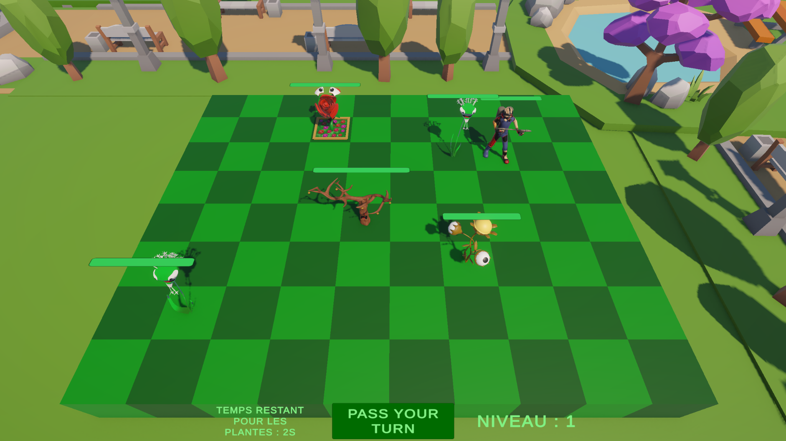

Jeu écologique et accessible réalisé avec Unity
Jardiworld est un jeu conçu avec Unity autour de problématiques écologiques et d’accessibilité.
Le jeu est basé sur un plateau, avec des mécaniques de déplacement et d’interaction. Il propose plusieurs messages visuels et sonores pour sensibiliser les joueurs à l’impact environnemental de certaines pratiques humaines.
Accessibilité et inclusion
- 🎧 Des permettent aux personnes non-voyantes de jouer au jeu.
- 📢 Les cases du plateau émettent des sons différents selon leur type ou leur dangerosité, pour permettre une navigation audio.
Technologies utilisées
- 💻 Unity avec le langage C#
- 🔊 Gestion du son 3D et scripts de retour sonore
- 🧩 Scripting de gameplay écologique et actions symboliques dans le jeu
- 🧑🎨 Modélisation 3D avec Blender
- 🔄 Travail collaboratif avec GitHub
Dans ce projet, je me suis principalement occupé de la modélisation 3D (plantes, personnages) et de l’intégration graphique dans Unity.